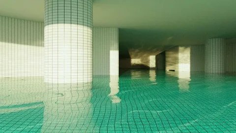

Our upcoming primary objective focuses on stabilizing vast, interconnected aquatic structures characterized by ambient light, non-Euclidean tiling, and static atmospheric pressure. Initial sensor sweeps indicate zero hostile entities, making it an ideal candidate for long-term spatial containment and resource harvesting.